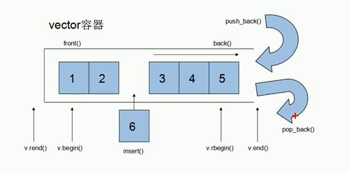

vector
功能：vector数据结构和数组非常相似，也称为单端数组
与普通数组的区别：普通数组是静态空间，而vector可以动态扩展
动态扩展：并不是在原空间之后续接新空间，而是找更大的内存空间，
然后将原数据拷贝新空间，释放原空间

vector容器的迭代器是支持随机访问的迭代器
vector构造函数
vector<T>v; //采用模板实现类实现，默认构造函数
vector<int>v1;
for(vector<int>::iterator it=v.begin();it!=v.end();it++)
vector(v.begin(), v.end()); //将v[ begin(),end() )区间中间的元素拷贝给本身
vector<int>v2(v1.begin(),v1.end());
vector(n,elem); //构造函数将n个elem拷贝给本身
vector<int>v3(10,100);
vector(const vector &vec); //拷贝构造函数
vector<int>v4(v3);
void printvector(vector<int>&v);
vector赋值操作
vector& operator=(const vector &vec); //重载等号操作符
vector<int>v1;
v1.push_back();.......
vector<int>v2 = v1;
assign(beg,end); //将区间[beg,end]中的数据拷贝给本身
vector<int>v3;
v3.assign(v1.begin(), v1.end());
assign(n,elem); //将n个elem拷贝赋值给本身
vector<int>v4;
v4.assign(10,100);
vector容量和大小
empty(); //判断容器是否为空
v1.empty();
capacity(); //容器的容量
v1.capacity();
size(); //返回容器中元素的个数
v1.size();
resize(int num); //重新指定容器的长度num，若容器变长，则以默认值填充新位置
//如果容器变短，则末尾超出容器长度的元素被删除
v1.resize(15);
resize(int num,elem); //同上，以elem作为默认值
vector插入和删除
push_back(ele);
pop_back();
insert(const_iterator pos,ele);
v1.insert(v1.begin(),100);
insert(const_iterator pos, int count, ele);
v1.insert(v1.begin(),2,100);
erase(const_iterator pos);
v1.erase(v1.begin());
erase(const_iterator start, const_iterator end);
v1.erase(v1.begin(),v1.end());
clear();
v1.clear();
vector数据存取
at(int idx); 返回索引idx所指的数据
operator[];
front(); //返回容器中第一个数据元素
back(); //返回容器中最后一个数据元素
vector互换容器
swap(vec); //将vec与本身的元素互换
v1.swap(v2);
收缩内存
for(int i=0; i<10000; i++)
{
v1.push_back(i);
}
v1.resize(3);
vector<int>(v1).swap(v1); //匿名对象以v1初始化，再和v1交换
vector预留空间
功能：减少vector在动态扩展容量时的扩展次数
reserve(int len); //容器预留len个元素长度，预留位置不初始化，元素不可访问
vector<int>v;
v.reserve(100000);
int num=0;
int *p =NULL;
for(int i=0;i<100000;i++)
{
v.push_back(i);
if(p != &v[0])
{
p=&v[0];
num++;
}
}
deque
功能：双端数组，可以对头端进行插入删除操作
和vector的区别：
- vector对头部的插入删除效率低，数据量越大，效率越低
- deque相对而言，对头部的插入删除速度会比vector块
- vector访问元素的速度会比deque块，这和两者内部实现有关

deque内部工作原理：
deque内部有个中控器，维护每段缓冲区中的内容，缓冲区中存放着真实的数据
中控器维护的是每个缓冲区的地址，使得使用deque时像一片连续的内存空间

deque容器的迭代器也是支持随机访问的
deque构造函数
deque<T> deqT;
deque<int>d1;
deque(beg,end); //构造函数将[beg, end]区间中的元素拷贝给本身
deque<int>d2(d1.begin(), d1.end());
deque(n,elem);
deque<int>d3(10,100);
deque(const deque &deq); //拷贝构造函数
deque<int>d4(d3);
for(int i = 0; i<10; i++)
{
d1.push_back(i);
}
for(deque<int>: :const_iterator it = d1.begin() ; it != d1.end() ; it++)
{
cout<<*it ;
}
deque赋值操作
deque& operator=(const deque &deq);
deque<int>d2 = d1;
assign(beg, end);
deque<int>d3;
d3.assign(d1.begin(), d1.end());
assign(n, elem);
deque<int>d4;
d4.assign(10, 100);
deque大小操作
deque.empty();
deque.size();
deque.resize();
deque.resize(num, elem);
deque插入和删除
push_back(elem);
push_front(elem);
pop_back();
pop_front();
insert(pos, elem); //在pos位置插入一个elem元素的拷贝，返回新数据的位置
d1.insert( d1.begin(), d1.end() );
insert(pos, n, elem);
insert(pos, beg, end);
d1.insert( d1.begin(), d2.begin(), d2.end() ) ;
clear();
erase(beg, end); //删除[beg, end]区间的数据，返回下一个数据的位置
erase(pos); //返回下一个数据的位置
deque数据存取
at(int idx);
operator[];
front(); //返回容器中第一个数据元素
back(); //返回最后一个
deque排序
#include<algorithm>
sort(iterator beg, iterator end) //对beg和end区间内元素进行升序